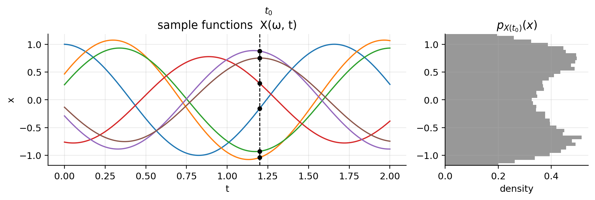
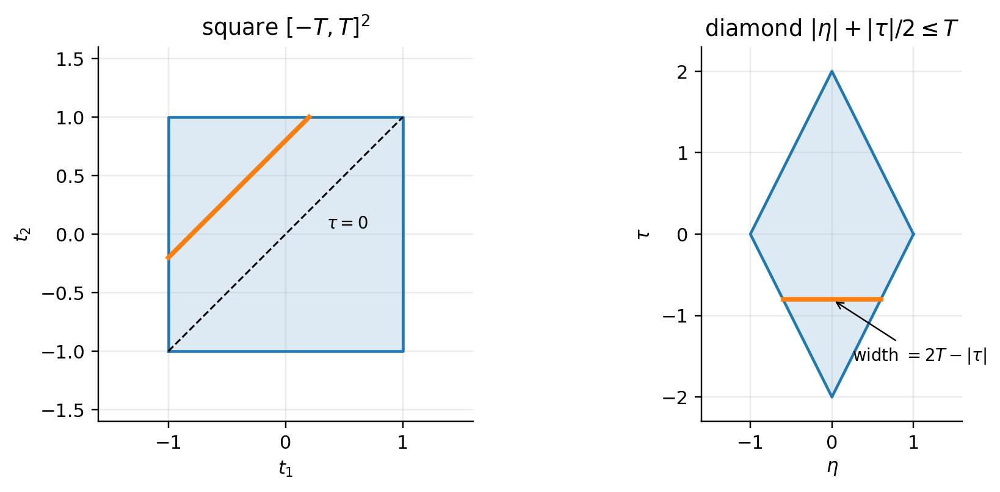
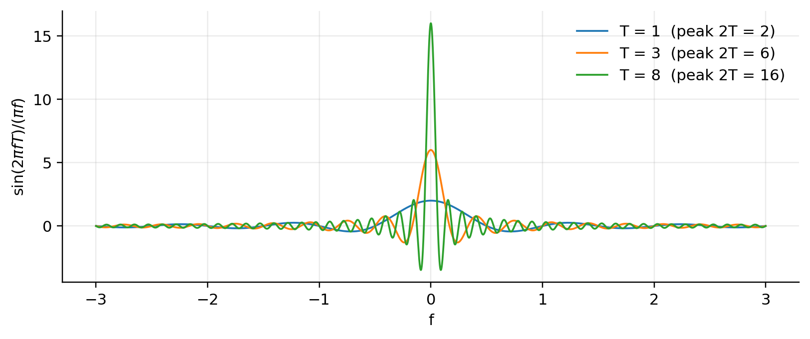
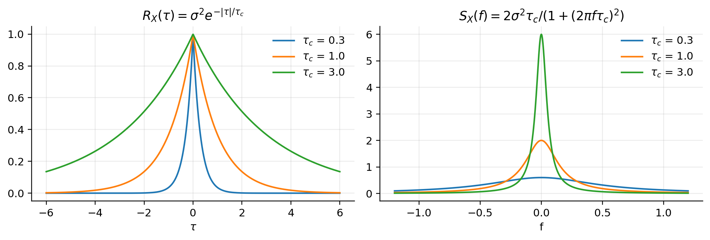
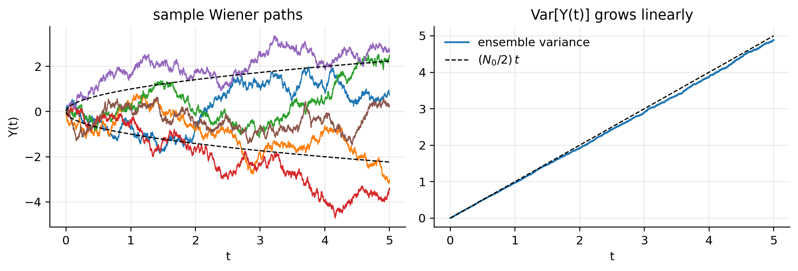

확률과정 (Stochastic Processes) - I
Random Signal Theory — 정상성, 자기상관함수, 전력스펙트럼밀도(Wiener–Khinchin), LTI 필터링, 위너 과정, 가우시안 과정
1 전체 흐름
이 문서가 다루는 논리의 뼈대는 다음 한 줄로 요약됩니다.
\[ \underbrace{X(\omega,t)}_{\text{확률과정}} \;\xrightarrow{\text{정상성 가정}}\; \underbrace{R_X(\tau)}_{\text{자기상관}} \;\xrightarrow{\;\mathcal{F}\;}\; \underbrace{S_X(f)}_{\text{PSD}} \;\xrightarrow{\text{LTI 필터}}\; S_Y(f)=|H(f)|^2S_X(f) \]
그리고 마지막에 두 개의 대표적인 확률과정 — 위너 과정(정상이 아닌 과정)과 가우시안 과정(평균·공분산만으로 모든 것이 결정되는 과정) — 을 다룹니다.
| 단계 | 핵심 질문 | 핵심 도구 |
|---|---|---|
| 기본 정의 | 확률과정은 어떤 대상인가? | 표본함수, 시각별 확률변수 |
| 정상성 | 통계적 성질이 시간 원점에 의존하는가? | SSS, WSS |
| 자기상관 | 두 시점은 얼마나 닮았는가? | \(R_X(\tau)\) |
| PSD | 전력이 주파수별로 어떻게 분포하는가? | Wiener–Khinchin 정리 |
| LTI 필터링 | 필터가 확률과정의 스펙트럼을 어떻게 바꾸는가? | \(S_Y=\lvert H\rvert^2 S_X\) |
| 위너 과정 | 백색잡음을 누적하면? | \(R_Y(t,u)=\tfrac{N_0}{2}\min(t,u)\) |
| 가우시안 과정 | 언제 2차 통계량만으로 충분한가? | 다변량 가우시안 |
2 확률과정의 기본 정의
2.1 두 변수의 함수로서의 확률과정
확률과정(random / stochastic process) \(X(\omega,t)\)는 표본공간의 각 결과 \(\omega\in\Omega\)에 하나의 시간함수를 대응시키는 규칙입니다.
\[ X:\ \Omega\times\mathcal{T}\to\mathbb{R},\qquad (\omega,t)\mapsto X(\omega,t) \]
즉 확률과정은 \(\omega\)와 \(t\) 두 변수의 함수이며, 어느 변수를 고정하느냐에 따라 전혀 다른 대상이 됩니다.
| 고정하는 것 | 얻어지는 대상 | 이름 |
|---|---|---|
| \(\omega\) 고정, \(t\) 변화 | 결정론적 시간함수 \(t\mapsto X(\omega,t)\) | 표본함수(sample function) / realization |
| \(t\) 고정, \(\omega\) 변화 | 확률변수 \(X(t)\), 분포 \(p_{X(t)}(x)\) | 시각 \(t\)에서의 확률변수 |
| 둘 다 고정 | 하나의 실수 | 표본값 |
| 둘 다 변화 | 표본함수들의 모임 | 앙상블(ensemble) |
Important표본함수는 정의역 전체에서 정의되어야 함
각 표본함수 \(t\mapsto X(\omega,t)\)는 관심 있는 시간 영역 전체에서 정의되어 있어야 합니다. “어떤 \(\omega\)에 대해서는 일부 시각에서만 값이 있다”는 식의 구성은 허용되지 않습니다.
2.2 가로로 읽기 vs 세로로 읽기
아래 그림은 확률과정의 이중적 해석을 한 번에 보여줍니다.
- 가로로 읽기: 각 곡선 하나하나가 서로 다른 결과 \(\omega\)에 대응하는 표본함수입니다. 오늘 관측한 파형과 내일 관측한 파형은 서로 다른 곡선일 수 있습니다.
- 세로로 읽기: 특정 시각 \(t_0\)에서 수직선을 그으면, 곡선들이 그 선과 만나는 점들의 집합이 확률변수 \(X(t_0)\)의 표본들이 되고, 그 분포가 \(p_{X(t_0)}(x)\)입니다.
3 정상성 (Stationarity)
3.1 결합분포(joint distribution)의 정확한 의미
정상성의 정의에는 결합분포가 등장하므로, 먼저 이 개념을 정확히 해 둡니다. 두 확률변수 \(X, Y\)가 같은 표본공간 위에 정의되어 있을 때 결합 CDF는
\[ P_{X,Y}(x,y) \stackrel{\text{def}}{=} \Pr[X\le x,\ Y\le y] = \Pr\Big(\{\omega: X(\omega)\le x\}\cap\{\omega: Y(\omega)\le y\}\Big) \]
이고, 결합 PDF는 (존재한다면) \(p_{X,Y}(x,y)=\dfrac{\partial^2}{\partial x\,\partial y}P_{X,Y}(x,y)\)입니다. 확률과정의 \(N\)차 결합분포는 이를 그대로 확장한 것입니다.
\[ P_{X(t_1),\dots,X(t_N)}(x_1,\dots,x_N) = \Pr\Big[X(t_1)\le x_1,\ \dots,\ X(t_N)\le x_N\Big] \]
Warning“확률변수들을 교집합한 것”이 아님
교집합이 취해지는 대상은 확률변수 \(X_i\) 자체가 아니라 사건 \(\{X_i\le x_i\}\)입니다. 그리고 “분포”란 그 교집합 사건의 확률을 \((x_1,\dots,x_N)\)의 함수로 본 것입니다. 정리하면:
결합분포 = “각 \(X_i\)로부터 만든 사건 \(\{X_i\le x_i\}\)들이 동시에 일어날 확률”을 \((x_1,\dots,x_N)\)의 함수로 나타낸 것
3.2 강정상성 (Strict-Sense Stationarity, SSS)
Note정의 (SSS)
확률과정 \(X(t)\)가 강정상(SSS)이라는 것은, 결합 진폭분포가 공통 시간이동에 대해 불변이라는 것입니다.
\[ P_{X(t_1-\Delta),\dots,X(t_N-\Delta)}(x_1,\dots,x_N) = P_{X(t_1),\dots,X(t_N)}(x_1,\dots,x_N), \qquad \forall\,\Delta \]
이 등식은 다음 세 가지 모두에 대해 성립해야 합니다.
- 임의의 차수 \(N\) (몇 개의 시각을 뽑든)
- 임의의 시각 집합 \(t_1,\dots,t_N\)
- 임의의 이동량 \(\Delta\in\mathbb{R}\)
직관적으로는, 관찰을 언제 시작하든(시계의 원점을 어디에 맞추든) 과정이 통계적으로 똑같아 보인다는 뜻입니다.
TipQ. SSS 조건은 특정 \(\Delta\)에서만 성립하면 되나, 모든 \(\Delta\)에서 성립해야 하나?
모든 \(\Delta\in\mathbb{R}\)에 대해 성립해야 합니다. 정의의 \(\forall\Delta\)가 바로 그 뜻입니다.
만약 특정한 \(\Delta_0\) 하나(그리고 그 정수배)에 대해서만 결합분포가 불변이라면, 이는 “시간 원점과 무관하다”가 아니라 “\(\Delta_0\) 주기로 통계가 반복된다”는 훨씬 약한 성질이며, 이런 과정은 주기정상(cyclostationary) 과정이라고 따로 부릅니다. (예: 심볼 주기 \(T_s\)로 변조된 디지털 통신 신호)
또한 \(\forall\Delta\) 조건은 차수 \(N\)과 시각 집합에 대한 “임의성”과 동시에 걸려 있습니다. 이 중 하나라도 “특정 경우”로 제한되면 더 이상 SSS가 아니라 약화된 정상성이 됩니다. 대표적인 약화가 아래의 WSS입니다.
3.2.1 SSS로부터 따라 나오는 것들
(1) \(N=1\): 1차 분포가 시간에 무관 → 평균·분산이 상수
\(N=1\)에 SSS 정의를 적용하면 \(p_{X(t-\Delta)}(x)=p_{X(t)}(x)\), 즉 모든 시각의 주변분포가 같습니다. 따라서
\[ m_X(t) = \mathbb{E}[X(t)] = \int_{-\infty}^{\infty} x\,p_{X(t)}(x)\,dx = \mu \quad(\text{상수}) \]
일반적인 확률과정에서는 평균도 \(t\)의 함수이지만, SSS에서는 PDF 자체가 고정되므로 평균도 고정됩니다.
Warning역은 성립하지 않음
“PDF가 고정 ⇒ 평균 고정”은 참이지만, “평균 고정 ⇒ PDF 고정”은 거짓입니다. 예를 들어 어떤 시각에는 균등분포, 어떤 시각에는 가우시안 분포를 따르되 평균은 항상 0인 과정을 생각할 수 있습니다. 평균은 고정되어 있지만 분포는 시각마다 다르므로 SSS가 아닙니다. 이 구분이 WSS라는 개념을 따로 도입하는 동기가 됩니다.
(2) \(N=2\): 자기상관이 시간차에만 의존 — 아래 자기상관함수 절에서 증명합니다.
3.3 자기상관함수 (Autocorrelation Function)
Note정의
\[ R_X(t_1,t_2) = \mathbb{E}\big[X(t_1)\,X(t_2)\big] = \int_{-\infty}^{\infty}\!\int_{-\infty}^{\infty} x_1x_2\,p_{X(t_1),X(t_2)}(x_1,x_2)\,dx_1\,dx_2 \]
확률변수론에서 두 확률변수 곱의 기댓값을 상관(correlation)이라 불렀습니다. 여기서는 두 시각 \(t_1,t_2\)를 고르지만 결국 같은 확률과정에서 나온 두 확률변수이므로, “자기 자신과의 상관”이라는 의미로 자기(auto)상관이라 부릅니다. 두 시점의 진폭이 얼마나 “함께 움직이는지”(유사한지)를 측정합니다.
3.3.1 왜 정상과정에서는 시간차 \(\tau\)에만 의존하는가
핵심은 기댓값은 결합분포만으로 완전히 결정된다는 점입니다. 위 정의의 우변은 오직 \(p_{X(t_1),X(t_2)}\)에만 의존합니다.
SSS 정의(\(N=2\))는 모든 \(\Delta\)에 대해
\[ p_{X(t_1-\Delta),\,X(t_2-\Delta)}(x_1,x_2) = p_{X(t_1),\,X(t_2)}(x_1,x_2) \]
를 요구합니다. 모든 \(\Delta\)에 대해 성립하므로 특정 값 \(\Delta=t_2\)를 대입해도 됩니다.
\[ p_{X(t_1-t_2),\,X(0)}(x_1,x_2) = p_{X(t_1),\,X(t_2)}(x_1,x_2) \]
두 결합분포가 같으므로 그로부터 계산한 기댓값도 같습니다.
\[ R_X(t_1,t_2) = \mathbb{E}[X(t_1)X(t_2)] = \mathbb{E}[X(t_1-t_2)\,X(0)] = R_X(t_1-t_2,\,0) \]
우변은 \(t_1,t_2\)를 개별적으로 포함하지 않고 오직 차이 \(\tau = t_1-t_2\)만 포함합니다. 따라서
\[ \boxed{R_X(t_1,t_2) = R_X(\tau),\qquad \tau = t_1 - t_2} \]
직관적으로는, 시간 원점이 통계에 영향을 주지 않는다면 두 시점 사이에 남는 정보는 “얼마나 떨어져 있는가” 뿐입니다. \((t_1,t_2)=(5,3)\)과 \((105,103)\)은 모두 \(\tau=2\)이므로 정상과정에서는 같은 상관을 가져야 합니다. 이는 다음과 같이 쓸 수도 있습니다.
\[ R_X(t_1,t_2) = R_X(t_1+\Delta,\ t_2+\Delta)\qquad \forall\Delta \]
Tip이 유도에 실제로 쓰인 것은 SSS 전체가 아님
위 유도에서 사용한 것은 \(N=2\) 결합분포의 시간이동 불변성뿐입니다. 즉 “\(R_X\)가 \(\tau\)에만 의존”을 얻는 데는 SSS(모든 차수)까지 필요 없고, 2차 수준의 불변성으로 충분합니다. 이 관찰이 곧 WSS의 설계 원리입니다.
3.3.2 \(\tau\)의 의미와 “일변량 vs 다변량”
TipQ. \(\tau\)는 time shift이고, \(R_X(\tau)=\mathbb{E}[X(t_1)X(t_1-\tau)]\)라는 뜻인가? 일변량이 아니라 다변량으로 이해하면 되나?
앞부분은 정확합니다. \(t_2=t_1-\tau\)를 대입하면
\[ R_X(\tau) = \mathbb{E}\big[X(t_1)\,X(t_1-\tau)\big] \]
입니다. (\(\tau=t_2-t_1\)로 정의하면 \(\mathbb{E}[X(t_1)X(t_1+\tau)]\)가 되지만, 아래에서 보듯 실수 WSS 과정의 \(R_X\)는 우함수이므로 어느 쪽으로 정의해도 같습니다.)
“다변량”이라는 표현은 두 가지 관점을 구분해야 정확합니다.
| 관점 | 답 |
|---|---|
| 함수 \(R_X\)의 입력 변수 개수 | 일반 과정: \(R_X(t_1,t_2)\)는 2변수 함수. 정상과정: \(\tau\) 하나의 1변수 함수로 축약 |
| 그 값을 계산하는 데 필요한 확률구조 | 두 확률변수 \(X(t_1), X(t_1-\tau)\)의 결합(2변량) 분포가 필요 → 이 의미에서 “다변량”이 맞음 |
각 시점의 주변분포만으로는 \(\mathbb{E}[X(t_1)X(t_1-\tau)]\)를 계산할 수 없습니다(두 시점이 독립인 특수한 경우 제외). 즉 “\(\tau\)는 하나의 변수이지만, 그 \(\tau\)에서의 값은 두 확률변수의 2차 결합적률”입니다.
3.3.3 자기상관함수의 기본 성질
실수 WSS 과정에 대해 다음이 성립합니다.
(a) \(R_X(0)\)은 평균 전력
\[ R_X(0) = \mathbb{E}[X(t)^2] \ge 0 \]
(b) 우함수: \(\tau\to-\tau\)는 두 시점의 역할을 바꾸는 것뿐이므로
\[ R_X(-\tau) = \mathbb{E}[X(t)X(t+\tau)] = \mathbb{E}[X(t+\tau)X(t)] = R_X(\tau) \]
(c) 원점에서 최대: Cauchy–Schwarz 부등식 \(\big(\mathbb{E}[UV]\big)^2\le\mathbb{E}[U^2]\,\mathbb{E}[V^2]\)를 \(U=X(t),\ V=X(t-\tau)\)에 적용하면
\[ R_X(\tau)^2 \le \mathbb{E}[X(t)^2]\,\mathbb{E}[X(t-\tau)^2] = R_X(0)^2 \quad\Longrightarrow\quad |R_X(\tau)|\le R_X(0) \]
그래서 “전형적인 \(R_X(\tau)\)”는 \(\tau=0\)에서 최댓값을 갖고 \(|\tau|\)가 커질수록 감소하는 모양으로 그려집니다. 자기 자신과의 상관이 가장 강하고, 시간적으로 멀어질수록 기억(memory)이 사라진다는 직관입니다.
3.4 광정상성 (Wide-Sense Stationarity, WSS)
Note정의 (WSS)
확률과정 \(X(t)\)가 다음 두 조건을 만족하면 광정상(WSS)이라 합니다.
- 평균이 상수: \(\;m_X(t) = \mu\quad \forall t\)
- 자기상관이 시간차에만 의존: \(\;\mathbb{E}[X(t_1)X(t_2)] = R_X(t_1-t_2)\)
SSS가 모든 차수의 결합분포의 시간이동 불변성을 요구하는 반면, WSS는 1차·2차 모멘트의 불변성만 요구합니다. 그래서 WSS를 2차(second-order) 정상성이라고도 부릅니다. 조건 2를 그림으로 말하면: 시각 \(t_1\)과 \(t_2\)의 PDF 자체는 각각 달라져도 되지만, 두 점을 같은 양 \(\Delta\)만큼 옮겨도 두 점의 간격이 같으면 상관도 같아야 합니다.
TipQ. 왜 WSS에서는 \(\mathbb{E}[X(t_1)X(t_2)] = R_X(t_1-t_2)\)가 성립하는가?
이 등식은 증명할 정리가 아니라 WSS의 정의 그 자체(조건 2)입니다. “이 성질을 만족하는 과정을 WSS라고 부르기로 한다”는 뜻입니다.
| 질문 | 답 |
|---|---|
| 일반 확률과정에서 자동으로 성립하는가? | 아니오. 일반적으로 \(R_X(t_1,t_2)\)는 진짜 2변수 함수 |
| WSS 안에서 성립하는가? | 예. 그것이 WSS 정의의 2번 조건 |
| 왜 이런 조건을 도입하는 것이 타당한가? | SSS를 가정하면 이 조건이 자동으로 유도되므로(위 절), SSS의 결론 중 PSD 계산에 실제로 필요한 부분만 뽑아 독립적인 가정으로 격상시킨 것 |
그래서 뒤의 Wiener–Khinchin 유도에서 \(\mathbb{E}[x(t_1)x(t_2)]\)를 \(R_X(t_1-t_2)\)로 바꾸는 순간은, 항등식을 쓰는 것이 아니라 “이 과정이 WSS라고 가정한다”는 결정적인 가정을 도입하는 순간입니다.
3.4.1 SSS와 WSS의 관계
\[ \text{SSS}\ \text{그리고}\ \mathbb{E}[X^2(t)]<\infty \;\Longrightarrow\; \text{WSS}, \qquad \text{WSS} \;\not\Longrightarrow\; \text{SSS} \]
- SSS ⇒ WSS: 위에서 보였듯 \(N=1\)에서 평균 상수, \(N=2\)에서 \(R_X\)가 \(\tau\)에만 의존. 단, 2차 모멘트가 유한해야 \(R_X\) 자체가 정의되므로 \(\mathbb{E}[X^2]<\infty\) 조건이 붙습니다.
- WSS ⇏ SSS: WSS는 3차 이상의 결합분포에 아무 제약을 주지 않습니다. 반례(이산시간): \(X[n]\)들이 서로 독립이고, \(n\)이 짝수이면 \(X[n]\sim\mathcal{N}(0,1)\), 홀수이면 \(X[n]\sim\mathrm{Unif}[-\sqrt{3},\sqrt{3}]\)라 하면, 평균은 항상 \(0\), 분산은 항상 \(1\)이고 \(R_X[k]=\delta[k]\)이므로 WSS입니다. 그러나 주변분포 자체가 시각에 따라 바뀌므로 SSS가 아닙니다.
- 예외: 가우시안 과정에서는 WSS ⇔ SSS — 가우시안 과정 절에서 증명합니다.
실무에서는 엄밀히 SSS가 아니더라도 WSS를 가정하는 경우가 많습니다. 예를 들어 무선채널은 엄밀히 시변(time-varying)이지만 짧은 구간 동안은 WSS로 근사하는 모델(WSSUS 채널 모델 등)이 표준적으로 쓰입니다.
3.5 공분산함수와 분산
평균 \(m_X\)인 WSS 과정의 공분산함수(covariance function)는
\[ K_X(\tau) = \mathbb{E}\big[(X(t)-m_X)(X(t-\tau)-m_X)\big] \]
입니다. 전개하면
\[ K_X(\tau) = \mathbb{E}[X(t)X(t-\tau)] - m_X\mathbb{E}[X(t-\tau)] - m_X\mathbb{E}[X(t)] + m_X^2 = R_X(\tau) - m_X^2 \]
즉 \(K_X\)와 \(R_X\)는 평균에 의한 상수만큼의 차이만 있고, 평균이 0이면 일치합니다. \(R_X\)는 평균을 빼지 않은(non-centered) 2차 모멘트, \(K_X\)는 평균을 뺀(centered) 2차 모멘트입니다.
분산은 공분산함수의 0-lag 값입니다.
\[ \sigma_X^2 = K_X(0) = R_X(0) - m_X^2 \]
즉 분산은 “\(X(t)\)가 평균으로부터 벗어나는 정도의 제곱 평균”이며, 공분산함수의 \(\tau=0\) 값에 불과합니다.
3.6 SSS를 만족하는 예
예 1: 확률 상수 과정 \(X(t)\equiv A\)
모든 시각에서 같은 확률변수 \(A\)를 값으로 갖는 과정입니다. 임의의 \(N\), \(t_1,\dots,t_N\), \(\Delta\)에 대해
\[ \big(X(t_1-\Delta),\dots,X(t_N-\Delta)\big) = (A,\dots,A) = \big(X(t_1),\dots,X(t_N)\big) \]
이므로 결합분포가 자명하게 불변입니다. \(A\)의 분포가 무엇이든 성립하는, 가장 간단한 SSS 예입니다. 이 과정의 PSD는 뒤에서 계산합니다.
예 2: WSS 가우시안 과정 — 가우시안 과정의 결합분포는 평균과 공분산만으로 결정되므로, 평균·공분산이 시간이동에 불변(WSS)이면 결합분포 전체가 불변(SSS)이 됩니다. 가우시안 과정 절에서 증명합니다. 가우시안 백색잡음, 가우시안이라고 가정한 지수상관 과정 등이 여기에 속합니다.
Note왜 정상성을 배우는가
- 개념적 기준점: SSS는 “완전한 정상성”의 정의를 제공하고, 실무에서 쓰는 WSS가 그보다 얼마나 약한 가정인지를 분명히 해 줍니다.
- PSD 정의의 전제조건: PSD는 \(R_X(\tau)\)의 푸리에 변환으로 정의되는데, \(R_X\)가 \(\tau\)만의 함수여야(최소한 WSS여야) 이 정의가 성립합니다.
- 이후 이론의 공통 전제: 대역제한 과정의 샘플링 정리, 정상 포아송 과정(\(\lambda\) 상수) 등 이후의 모델들도 정상성 가정 위에서 단순해집니다.
4 전력스펙트럼밀도 (Power Spectral Density)
4.1 결정론적 신호의 PSD
결정론적 신호 \(x(t)\)의 PSD는 시간평균으로 정의됩니다.
\[ S_x(f) = \lim_{T\to\infty}\frac{1}{2T}\big|X_T(f)\big|^2, \qquad X_T(f) = \int_{-T}^{T} x(t)\,e^{-j2\pi ft}\,dt \]
- \(x(t)\)가 무한한 시간에 걸쳐 있으면 전체 에너지가 무한대여서 푸리에 변환이 발산할 수 있습니다.
- 그래서 유한 구간 \([-T,T]\)로 잘라낸 신호의 스펙트럼 \(X_T(f)\)를 구하고,
- \(|X_T(f)|^2\)(에너지 스펙트럼)을 관측 구간 길이 \(2T\)로 나눠 단위 시간당 전력으로 만든 뒤,
- \(T\to\infty\)로 보내 전체 시간에 대한 평균 전력 스펙트럼을 얻습니다.
TipQ. \(T\)는 주기인가? 적분 범위를 \(0\sim T\)로 하면 안 되나? 왜 분모가 \(2T\)인가?
\(T\)는 주기가 아닙니다. 이 정의는 주기신호라는 가정이 전혀 없으며, 오히려 비주기 신호와 확률과정을 다루기 위한 것입니다. \(T\)는 관측 구간의 절반 길이(half-window length)이고, 관측 구간 \([-T,T]\)의 전체 길이가 \(2T\)입니다. \(T\to\infty\)는 “주기를 무한대로”가 아니라 “관측 시간을 늘려 결국 전체 시간축에 대한 평균에 도달한다”는 뜻입니다. (푸리에 급수에서 한 주기 \(T_0\)에 대해 \(\frac{1}{T_0}\int_0^{T_0}\)을 쓰던 표기와 모양이 비슷해서 생기는 혼동입니다.)
핵심 원칙은 분모 = 적분 구간의 길이입니다. 그래야 결과가 정확히 “단위 시간당” 양이 됩니다.
| 관측 구간 | 구간 길이 | 정규화 |
|---|---|---|
| \([-T,\,T]\) | \(2T\) | \(\dfrac{1}{2T}\lvert X_T(f)\rvert^2\) |
| \([0,\,T]\) | \(T\) | \(\dfrac{1}{T}\lvert X_T(f)\rvert^2\) |
\([0,T]\)로 잡아도 정규화만 맞추면 완전히 동등한 정의이고, (정상적인 신호에 대해) \(T\to\infty\) 극한에서는 구간을 어디서 시작했는지가 결과에 영향을 주지 않습니다. 원점 대칭 구간을 택하는 것은 유도의 편의 때문입니다. 대칭 윈도우 \(w_T(t)=\mathbf{1}\{|t|\le T\}\)를 쓰면 아래의 변수변환 후 적분 영역이 원점 대칭의 깔끔한 마름모가 됩니다.
4.2 확률과정의 PSD: 기댓값으로 정의
확률과정 \(X(t)\)에 대해서는 사정이 다릅니다.
- 파형 \(X(\omega,t)\)는 표본함수마다 다르고, 우리가 아는 것은 파형이 아니라 분포뿐입니다. 오늘 관측한 표본과 내일 관측한 표본은 다른 곡선입니다.
- 따라서 “확률과정 전체를 대표하는 단 하나의 푸리에 변환”은 존재하지 않습니다. 표본함수 하나에 대해 \(X_T(f)\)를 계산할 수는 있지만, 그 값은 표본마다 다른 확률변수입니다.
그래서 PSD는 유한구간 스펙트럼 \(|X_T(f)|^2\)을 구한 뒤 앙상블 평균(기댓값)을 취해 정의합니다. 각 표본함수가 자신의 확률만큼 기여하도록 평균하는 것입니다.
\[ S_X(f) = \lim_{T\to\infty}\frac{1}{2T}\,\mathbb{E}\Big[\big|X_T(f)\big|^2\Big] \]
그 결과가 Wiener–Khinchin 정리입니다.
\[ \boxed{S_X(f) = \int_{-\infty}^{\infty} R_X(\tau)\,e^{-j2\pi f\tau}\,d\tau} \]
즉 확률과정의 PSD는 자기상관함수의 푸리에 변환입니다. 아래에서 이를 단계별로 유도합니다.
4.3 Wiener–Khinchin 정리의 유도
4.3.1 1단계: 유한 윈도우 설정
수렴 문제를 피하기 위해 시간제한된 버전을 관측합니다.
\[ x_T(t) = x(t)\,w_T(t),\qquad w_T(t)=\begin{cases}1, & |t|\le T\\ 0, & \text{otherwise}\end{cases} \]
\[ X_T(f) = \int_{-\infty}^{\infty} x_T(t)\,e^{-j2\pi ft}\,dt = \int_{-T}^{T} x(t)\,e^{-j2\pi ft}\,dt \]
유한 시간 양을 다음과 같이 정의합니다.
\[ S_X^{(T)}(f) = \frac{1}{2T}\,\big|X_T(f)\big|^2 \]
4.3.2 2단계: \(|X_T(f)|^2\) 전개 — 켤레복소수의 등장
복소수의 절댓값 제곱은 그 수와 켤레복소수의 곱입니다.
\[ |X_T(f)|^2 = X_T(f)\cdot X_T^*(f) \]
첫 번째 인자는 \(X_T(f)\)의 정의 그대로이며, 적분변수를 \(t_1\)으로 씁니다. 두 번째 인자(켤레)는 다른 적분변수 \(t_2\)로 씁니다. \(x(t)\)가 실수이므로 켤레를 취하면 지수의 부호만 바뀝니다.
\[ |X_T(f)|^2 = \underbrace{\left(\int_{-T}^{T} x(t_1)\,e^{-j2\pi ft_1}\,dt_1\right)}_{X_T(f)} \underbrace{\left(\int_{-T}^{T} x(t_2)\,e^{+j2\pi ft_2}\,dt_2\right)}_{X_T^*(f)} \]
Note적분변수를 \(t_1\), \(t_2\)로 구분하는 이유
두 인자가 각각 독립된 적분변수를 갖도록 해야 다음 단계에서 이중적분으로 합칠 수 있고, 거기서 \(x(t_1)x(t_2)\)라는 두 시점의 곱이 나타나 자기상관 \(\mathbb{E}[x(t_1)x(t_2)]\)로 연결됩니다. 만약 켤레 인자 없이 \(X_T(f)\) 하나만 쓰면 등호가 성립하지 않습니다. 켤레 인자가 곧 두 번째 적분입니다.
4.3.3 3단계: 두 적분의 곱을 이중적분으로
\[ |X_T(f)|^2 = \int_{-T}^{T}\!\int_{-T}^{T} x(t_1)\,x(t_2)\,e^{-j2\pi f(t_1-t_2)}\,dt_1\,dt_2 \]
TipQ. 각각 적분한 값을 곱한 것이 곱한 다음 적분한 것과 같다는 보장이 있는가?
항상 성립합니다. 근사가 아니라 적분의 선형성만으로 나오는 항등식입니다.
핵심은 \(A\equiv\int x(t_1)e^{-j2\pi ft_1}dt_1\)과 \(B\equiv\int x(t_2)e^{+j2\pi ft_2}dt_2\)가 적분이 끝난 뒤에는 \(t_1, t_2\)의 함수가 아니라 (주어진 \(f,T\)에 대한) 상수라는 점입니다.
(i) \(B\)는 \(t_1\)과 무관한 상수이므로 \(A\)의 적분 안으로 넣을 수 있습니다. \[ A\cdot B = \int_{-T}^{T} x(t_1)e^{-j2\pi ft_1}\cdot B\;dt_1 \]
(ii) \(B\)를 그 정의로 다시 풀어 씁니다. \[ = \int_{-T}^{T} x(t_1)e^{-j2\pi ft_1}\left(\int_{-T}^{T}x(t_2)e^{+j2\pi ft_2}\,dt_2\right)dt_1 \]
(iii) 안쪽 적분 입장에서 \(x(t_1)e^{-j2\pi ft_1}\)은 상수이므로 안으로 넣습니다. \[ = \int_{-T}^{T}\!\int_{-T}^{T} x(t_1)x(t_2)\,e^{-j2\pi f t_1}e^{+j2\pi f t_2}\,dt_2\,dt_1 \]
이 결과는 엄밀히 반복적분(iterated integral)입니다. 이를 정사각형 영역 위의 이중적분과 동일시하고, 이후 적분 순서를 바꾸거나 \(\mathbb{E}[\cdot]\)을 적분 안으로 넣는 조작의 정당성은 Fubini–Tonelli 정리가 보장합니다.
\[ \iint |x(t_1)x(t_2)|\,dt_1\,dt_2<\infty \;\Longrightarrow\; \text{반복적분} = \text{이중적분},\ \text{순서 교환 가능} \]
적분 구간 \([-T,T]\)가 유한하고 신호가 유계이면 이 절대수렴 조건은 자동으로 만족됩니다.
4.3.4 4단계: 기댓값을 취하고 WSS 가정 도입
기댓값과 적분은 모두 선형연산이므로(Fubini에 의해) 교환할 수 있습니다.
\[ \mathbb{E}\big[|X_T(f)|^2\big] = \int_{-T}^{T}\!\int_{-T}^{T} \mathbb{E}\big[x(t_1)x(t_2)\big]\,e^{-j2\pi f(t_1-t_2)}\,dt_1\,dt_2 \]
여기서 결정적인 가정을 도입합니다: 과정이 WSS이다. 그러면 \(\mathbb{E}[x(t_1)x(t_2)]\)는 자기상관함수이고, 그것은 절대시각이 아니라 차이 \(t_1-t_2\)에만 의존합니다.
\[ \mathbb{E}\big[|X_T(f)|^2\big] = \int_{-T}^{T}\!\int_{-T}^{T} R_X(t_1-t_2)\,e^{-j2\pi f(t_1-t_2)}\,dt_1\,dt_2 \]
이제 피적분함수 전체가 \(t_1-t_2\) 하나의 함수가 되었으므로, 이 차이를 새 변수로 잡는 것이 자연스럽습니다.
4.3.5 5단계: 변수변환 \((t_1,t_2)\mapsto(\eta,\tau)\)와 야코비안
\[ \eta = \frac{t_1+t_2}{2}\ (\text{중심}),\qquad \tau = t_1-t_2\ (\text{차이}) \qquad\Longleftrightarrow\qquad t_1 = \eta+\frac{\tau}{2},\quad t_2 = \eta-\frac{\tau}{2} \]
야코비안 행렬식은
\[ J = \det\begin{bmatrix}\dfrac{\partial t_1}{\partial\eta} & \dfrac{\partial t_1}{\partial\tau}\\[6pt] \dfrac{\partial t_2}{\partial\eta} & \dfrac{\partial t_2}{\partial\tau}\end{bmatrix} = \det\begin{bmatrix}1 & 1/2\\ 1 & -1/2\end{bmatrix} = (1)\!\left(-\tfrac{1}{2}\right) - \left(\tfrac{1}{2}\right)\!(1) = -1 \]
이고, 면적요소는
\[ dt_1\,dt_2 = |J|\,d\eta\,d\tau = d\eta\,d\tau \]
TipQ. \(J=-1\)인데 왜 \(dt_1dt_2 = d\eta\,d\tau\)인가? 부호가 누락된 것 아닌가?
누락이 아니라 다변수 치환적분 공식에 원래 절댓값 \(|J|\)가 들어가기 때문입니다.
- \(dt_1dt_2\)와 \(d\eta\,d\tau\)는 면적요소이고, 면적은 좌표계와 무관하게 항상 0 이상입니다.
- 행렬식 \(J\)의 부호는 변환이 방향(orientation)을 보존하는지(\(J>0\)) 뒤집는지(\(J<0\))를 나타내고, 크기 \(|J|\)는 면적의 확대·축소 비율을 나타냅니다.
- 적분에서 필요한 것은 면적 비율이므로 \(|J|\)만 사용합니다.
여기서 \(J=-1\)이 나온 것은 \(\tau=t_1-t_2\)가 \(t_2\)가 커질수록 감소하는 방향이라 축의 감기는 방향이 뒤집혔기 때문입니다. \(\tau=t_2-t_1\)로 정의했다면 \(J=+1\)이 나옵니다. 어느 쪽이든 \(|J|=1\)이므로 이 변환은 면적을 보존하며, \(dt_1dt_2=d\eta\,d\tau\)를 그대로 바꿔 쓸 수 있습니다.
4.3.6 6단계: 적분 영역 — 정사각형이 마름모가 된다
원래 적분 영역은 정사각형 \([-T,T]\times[-T,T]\)입니다. 이를 \((\eta,\tau)\)로 옮깁니다.
① \(t_1\) 조건
\[ -T\le \eta+\frac{\tau}{2}\le T \quad\Longrightarrow\quad -T-\frac{\tau}{2}\le\eta\le T-\frac{\tau}{2} \]
② \(t_2\) 조건
\[ -T\le \eta-\frac{\tau}{2}\le T \quad\Longrightarrow\quad -T+\frac{\tau}{2}\le\eta\le T+\frac{\tau}{2} \]
③ 두 조건의 교집합: 하한 중 큰 쪽, 상한 중 작은 쪽을 취합니다.
\[ \max\!\left(-T-\tfrac{\tau}{2},\,-T+\tfrac{\tau}{2}\right) = -T+\frac{|\tau|}{2},\qquad \min\!\left(T-\tfrac{\tau}{2},\,T+\tfrac{\tau}{2}\right) = T-\frac{|\tau|}{2} \]
\[ \Longrightarrow\quad -\Big(T-\frac{|\tau|}{2}\Big)\le\eta\le T-\frac{|\tau|}{2} \quad\Longleftrightarrow\quad |\eta|+\frac{|\tau|}{2}\le T \]
④ \(\tau\)의 범위: \(\eta\) 구간이 공집합이 아니려면 하한 ≤ 상한이어야 합니다.
\[ -T+\frac{|\tau|}{2}\le T-\frac{|\tau|}{2}\quad\Longrightarrow\quad |\tau|\le 2T \]
따라서
\[ \mathbb{E}\big[|X_T(f)|^2\big] = \int_{-2T}^{2T}\int_{-(T-|\tau|/2)}^{\,T-|\tau|/2} R_X(\tau)\,e^{-j2\pi f\tau}\,d\eta\,d\tau \]
\(|\eta|+|\tau|/2\le T\)는 \((\eta,\tau)\) 평면에서 마름모(다이아몬드)입니다. 변환 \((\eta,\tau)\)는 정사각형을 \(45^\circ\) 돌려 대각선 방향을 새 축으로 삼는 것과 같으므로, 원래의 정사각형이 새 좌표에서는 마름모로 보입니다. \(\tau\)가 \(0\)에서 \(\pm2T\)로 갈수록 허용되는 \(\eta\)의 폭 \(2T-|\tau|\)가 선형으로 줄어 꼭짓점이 됩니다.

4.3.7 7단계: \(\eta\)에 대해 적분 — 삼각 가중치의 등장
피적분함수 \(R_X(\tau)e^{-j2\pi f\tau}\)는 \(\eta\)에 의존하지 않으므로 \(\eta\) 적분은 마름모의 “높이”(폭)를 구하는 것에 불과합니다.
\[ \int_{-(T-|\tau|/2)}^{\,T-|\tau|/2} d\eta = 2T-|\tau| \]
\[ \mathbb{E}\big[|X_T(f)|^2\big] = \int_{-2T}^{2T}\big(2T-|\tau|\big)\,R_X(\tau)\,e^{-j2\pi f\tau}\,d\tau \]
\(2T\)로 나누면
\[ \frac{1}{2T}\,\mathbb{E}\big[|X_T(f)|^2\big] = \int_{-2T}^{2T}\left(1-\frac{|\tau|}{2T}\right)R_X(\tau)\,e^{-j2\pi f\tau}\,d\tau \]
Note삼각 가중치 \((1-|\tau|/2T)\)의 의미
길이 \(2T\)의 관측 구간 안에서 시간차가 \(\tau\)인 점의 쌍 \((t_1,t_2)\)는 \(\tau=0\)일 때 가장 많고, \(|\tau|\)가 커질수록 선형으로 줄어듭니다(마름모의 폭). 즉 유한 관측에서는 큰 lag의 상관이 덜 반영되며, 이 효과가 삼각형(Bartlett) 가중치로 나타납니다.
4.3.8 8단계: \(T\to\infty\) 극한
\(T\to\infty\)이면 각 \(\tau\)에서 \((1-|\tau|/2T)\to1\)이고 적분 구간은 \((-\infty,\infty)\)로 넓어집니다.
\[ S_X(f) = \lim_{T\to\infty}\int_{-2T}^{2T}\left(1-\frac{|\tau|}{2T}\right)R_X(\tau)\,e^{-j2\pi f\tau}\,d\tau = \int_{-\infty}^{\infty} R_X(\tau)\,e^{-j2\pi f\tau}\,d\tau \]
(극한과 적분의 교환은 \(\int|R_X(\tau)|\,d\tau<\infty\)이면 지배수렴정리로 정당화됩니다. 백색잡음처럼 \(R_X\)가 델타함수를 포함하는 경우는 분포(generalized function)의 의미로 이해합니다.)
4.4 Wiener–Khinchin 쌍과 성질
\[ S_X(f) = \mathcal{F}\{R_X(\tau)\}(f),\qquad R_X(\tau) = \mathcal{F}^{-1}\{S_X(f)\}(\tau) = \int_{-\infty}^{\infty}S_X(f)\,e^{j2\pi f\tau}\,df \]
시간지연 구조 ⇔ 주파수 성분이 서로 푸리에 쌍입니다. 여기서 몇 가지 성질이 곧바로 나옵니다.
- 총 전력: 역변환에 \(\tau=0\)을 대입하면 \(\;R_X(0)=\mathbb{E}[X^2(t)]=\displaystyle\int_{-\infty}^{\infty}S_X(f)\,df\). PSD를 전 주파수에 걸쳐 적분하면 평균 전력이 됩니다.
- 실수·우함수: \(R_X\)가 실수 우함수이므로 \(S_X(f)=\displaystyle 2\int_0^\infty R_X(\tau)\cos(2\pi f\tau)\,d\tau\) 는 실수이고 \(f\)에 대한 우함수입니다.
- 비음수: \(S_X(f)\)는 \(\frac{1}{2T}\mathbb{E}|X_T(f)|^2\ge0\)의 극한이므로 \(S_X(f)\ge0\)입니다.
5 예제: 상관 구조와 스펙트럼의 쌍대성
5.1 극단 1 — 백색잡음: \(R_X(\tau)=\sigma^2\delta(\tau)\)
\[ R_X(\tau) = \sigma^2\delta(\tau) \quad\xrightarrow{\ \mathcal{F}\ }\quad S_X(f) = \int_{-\infty}^{\infty}\sigma^2\delta(\tau)\,e^{-j2\pi f\tau}\,d\tau = \sigma^2\quad(\text{평탄}) \]
통신에서는 보통 \(\sigma^2\) 대신 \(N_0/2\)를 씁니다: \(R_X(\tau)=\frac{N_0}{2}\delta(\tau)\), \(S_X(f)=\frac{N_0}{2}\) (양측 PSD).
통계적 의미: 서로 다른 시각에서는
\[ \forall\,\tau\ne0:\quad R_X(\tau) = \mathbb{E}[X(t)X(t-\tau)] = 0 \]
즉 두 시점이 아주 조금이라도 다르면 상관이 0입니다. 기억이 전혀 없는(no memory) 과정으로, 어느 순간의 값을 정확히 알아도 아주 짧은 시간 뒤의 값을 전혀 예측할 수 없습니다.
Note물리적 예: 열잡음(thermal noise)
아무 전원도 연결하지 않은 저항 양단의 전압을 재면 큰 스케일에서는 0처럼 보이지만, 오실로스코프로 \(10^{-4}\,\text{V}\) 수준까지 확대하면 정확히 0이 아닙니다. 도체 안의 수많은 전자가 열에너지 때문에 무작위로 움직이고, 어느 순간에는 한쪽으로, 다음 순간에는 반대쪽으로 쏠리기 때문입니다. 평균은 0이지만 순간값은 양수와 음수를 오갑니다.
- 왜 백색인가: 한 순간의 잡음을 알아도 \(10^{-7}\)초 뒤의 잡음을 예측할 수 없습니다. 상관이 없으므로 \(R_X(\tau)\propto\delta(\tau)\)이고, PSD는 100 MHz든 수 GHz든 같습니다. 우리가 이 잡음을 제어하거나 예측할 수 없는 이유입니다.
- 왜 가우시안인가: 잡음 전압은 매우 많은 전자 운동의 합이므로, 중심극한정리에 의해 전체 거동이 평균 0인 가우시안 확률변수처럼 보입니다.
- 이름의 유래: 모든 가시광 주파수 성분이 고루 섞인 빛이 흰색으로 보인다는 것에 빗대어 “백색(white)”이라 부릅니다. 다만 이는 이름의 비유일 뿐이며, 실제 태양광 스펙트럼은 흑체복사 형태라 엄밀히 평탄하지 않습니다.
Warning이상화(idealization)라는 점
완전한 백색잡음은 \(R_X(0)=\int S_X(f)\,df=\infty\), 즉 평균 전력이 무한대이므로 물리적으로 존재할 수 없는 수학적 이상화입니다. 실제 열잡음은 상온에서 대략 \(kT/h\approx 6\,\text{THz}\) 부근까지 평탄하므로, 관심 대역(무선통신 대역)보다 훨씬 넓은 범위에서 평탄하다는 의미로 백색 모델을 씁니다. 수신기 필터를 통과하고 나면 전력은 유한해집니다(아래 LTI 절 참조).
5.2 극단 2 — 확률 상수 과정: \(X(t)\equiv A\)
5.2.1 자기상관
모든 시각에서 같은 확률변수 \(A\)이므로, 시각이 몇이든 \(\tau\)가 몇이든
\[ R_X(\tau) = \mathbb{E}[X(t)X(t-\tau)] = \mathbb{E}[A\cdot A] = \mathbb{E}[A^2] \]
TipQ. 왜 \(\mathbb{E}[A^2] = \sigma_A^2 + m_A^2\)인가?
분산의 정의 \(\sigma_A^2 = \mathbb{E}[(A-m_A)^2]\) (단 \(m_A=\mathbb{E}[A]\))를 전개하면
\[ \sigma_A^2 = \mathbb{E}[A^2] - 2m_A\mathbb{E}[A] + m_A^2 = \mathbb{E}[A^2] - 2m_A^2 + m_A^2 = \mathbb{E}[A^2] - m_A^2 \]
따라서 \(\mathbb{E}[A^2]=\sigma_A^2+m_A^2\). 즉 2차 모멘트 = 분산 + 평균의 제곱이라는 항등식입니다. \(\mathbb{E}[A^2]\)를 더 익숙한 두 통계량(평균, 분산)으로 바꿔 쓴 것입니다.
\[ R_X(\tau) = \sigma_A^2 + m_A^2\quad(\tau\text{와 무관한 상수}),\qquad m_A=0 \text{이면}\ R_X(\tau)=\sigma_A^2\ \ \forall\tau \]
모든 lag에서 완전한 상관 — 이 과정은 완전한 기억(full memory)을 갖습니다. 한 순간의 값을 알면 모든 시각의 값을 압니다.
5.2.2 PSD: 상수의 푸리에 변환은 델타함수
\(m_A=0\)이라 하면
\[ S_X(f) = \int_{-\infty}^{\infty}\sigma_A^2\,e^{-j2\pi f\tau}\,d\tau = \sigma_A^2\,\delta(f) \]
(일반적으로 \(m_A\neq0\)이면 \(S_X(f)=(\sigma_A^2+m_A^2)\,\delta(f)\)입니다.)
TipQ. 왜 이 적분이 \(\delta(f)\)가 되는가?
피적분함수 \(e^{-j2\pi f\tau}\)는 \(|\tau|\to\infty\)에서 크기 1을 유지하며 진동하므로, 이 적분은 보통의(절대수렴하는) 적분으로는 존재하지 않습니다. 극한(분포)의 의미로 이해해야 합니다.
유한 구간에서 먼저 계산
\[ \int_{-T}^{T} e^{-j2\pi f\tau}\,d\tau = \left[\frac{e^{-j2\pi f\tau}}{-j2\pi f}\right]_{-T}^{T} = \frac{e^{-j2\pi fT}-e^{j2\pi fT}}{-j2\pi f} = \frac{-2j\sin(2\pi fT)}{-j2\pi f} = \frac{\sin(2\pi fT)}{\pi f} \]
이 함수를 \(f\)의 함수로 보면 \(T\to\infty\)에서 다음 성질을 갖습니다.
- 넓이가 항상 1: \(\displaystyle\int_{-\infty}^{\infty}\frac{\sin(2\pi fT)}{\pi f}\,df = 1\) (\(T\)와 무관, Dirichlet 적분 \(\int\frac{\sin ax}{x}dx=\pi\))
- 원점 높이가 발산: \(f\to0\)에서 값이 \(2T\to\infty\)
- \(f\ne0\)에서는 상쇄: \(\sin(2\pi fT)\)가 점점 빠르게 진동하여, 작은 구간에서 평균하면 0으로 사라짐
넓이는 1로 고정된 채 폭은 0으로, 높이는 무한대로 가는 것 — 이것이 정확히 디랙 델타의 정의적 특성입니다.
\[ \lim_{T\to\infty}\frac{\sin(2\pi fT)}{\pi f} = \delta(f)\quad(\text{분포의 의미로}) \]
역변환으로 검산: \(R_X(0)=\int\sigma_A^2\delta(f)e^{j2\pi f\cdot0}df=\sigma_A^2\)로, 원래의 \(R_X(\tau)=\sigma_A^2\)와 일치합니다.

이 결과는 변하지 않는 신호는 모든 전력이 직류(DC, \(f=0\))에 있다는 물리적 직관과 일치합니다.
Note참고: 정상이지만 에르고딕하지 않음
확률 상수 과정은 SSS이지만, 표본함수 하나의 시간평균은 \(\lim\frac{1}{2T}\int_{-T}^{T}X(\omega,t)\,dt = A(\omega)\)로 확률변수이며 앙상블 평균 \(m_A\)와 일반적으로 다릅니다. 즉 “하나의 표본을 오래 관측해 앙상블 통계를 알아내는 것”(에르고딕성)이 불가능한 대표적 예입니다. 정상성과 에르고딕성은 별개의 성질입니다.
5.3 절충 — 지수 상관과 로렌츠형(Lorentzian) PSD
평균 0, 상관시간 \(\tau_c\)인 지수형 자기상관을 생각합니다.
\[ R_X(\tau) = \sigma^2\,e^{-|\tau|/\tau_c} \]
5.3.1 1단계: 절댓값 때문에 구간을 나누고 코사인으로 합치기
\[ S_X(f) = \int_{-\infty}^{\infty}\sigma^2 e^{-|\tau|/\tau_c}\,e^{-j2\pi f\tau}\,d\tau = \underbrace{\int_{-\infty}^{0}\sigma^2 e^{\tau/\tau_c}e^{-j2\pi f\tau}\,d\tau}_{\tau<0:\ |\tau|=-\tau} + \underbrace{\int_{0}^{\infty}\sigma^2 e^{-\tau/\tau_c}e^{-j2\pi f\tau}\,d\tau}_{\tau\ge0:\ |\tau|=\tau} \]
첫 번째 적분에 \(\tau\to-\tau\)를 치환하면 구간이 \((0,\infty)\)로 바뀌고
\[ \int_{-\infty}^{0}\sigma^2 e^{\tau/\tau_c}e^{-j2\pi f\tau}\,d\tau = \int_{0}^{\infty}\sigma^2 e^{-\tau/\tau_c}e^{+j2\pi f\tau}\,d\tau \]
따라서 오일러 공식 \(e^{j\theta}+e^{-j\theta}=2\cos\theta\)에 의해
\[ S_X(f) = \sigma^2\int_0^\infty e^{-\tau/\tau_c}\Big(e^{j2\pi f\tau}+e^{-j2\pi f\tau}\Big)d\tau = 2\sigma^2\int_0^\infty e^{-\tau/\tau_c}\cos(2\pi f\tau)\,d\tau \]
이는 “우함수의 푸리에 변환은 코사인 변환으로 계산할 수 있다”는 일반 성질의 한 사례입니다.
5.3.2 2단계: 표준적분
\[ \int_0^\infty e^{-a\tau}\cos(b\tau)\,d\tau = \frac{a}{a^2+b^2}\qquad(a>0) \]
증명: \(\cos(b\tau)=\mathrm{Re}\{e^{jb\tau}\}\)이므로
\[ \int_0^\infty e^{-a\tau}e^{jb\tau}\,d\tau = \int_0^\infty e^{-(a-jb)\tau}\,d\tau = \frac{1}{a-jb} \]
(\(a>0\)이므로 \(\tau\to\infty\)에서 감쇠). 실수부를 취하면
\[ \mathrm{Re}\left\{\frac{1}{a-jb}\right\} = \mathrm{Re}\left\{\frac{a+jb}{a^2+b^2}\right\} = \frac{a}{a^2+b^2} \]
5.3.3 3단계: 대입과 정리
\(a=1/\tau_c\), \(b=2\pi f\)를 대입하고 분자·분모에 \(\tau_c^2\)을 곱하면
\[ \int_0^\infty e^{-\tau/\tau_c}\cos(2\pi f\tau)\,d\tau = \frac{1/\tau_c}{(1/\tau_c)^2+(2\pi f)^2} = \frac{\tau_c}{1+(2\pi f\tau_c)^2} \]
\[ \boxed{S_X(f) = \frac{2\sigma^2\tau_c}{1+(2\pi f\tau_c)^2}}\qquad(\text{Lorentzian}) \]
검산: 총 전력 \(\int S_X(f)\,df = 2\sigma^2\tau_c\cdot\frac{1}{2\pi\tau_c}\cdot\pi = \sigma^2 = R_X(0)\) ✓. 반전력(−3 dB) 주파수는 \(f_{3\text{dB}}=\dfrac{1}{2\pi\tau_c}\)입니다.

5.4 쌍대성 정리
세 예제는 시간–주파수 쌍대성의 스펙트럼 위에 놓입니다.
| 과정 | \(R_X(\tau)\) (시간 영역) | \(S_X(f)\) (주파수 영역) | 기억 |
|---|---|---|---|
| 백색잡음 | \(\sigma^2\delta(\tau)\) — 무한히 좁음 | \(\sigma^2\) — 무한히 넓음(평탄) | 없음 |
| 지수 상관 | \(\sigma^2e^{-\lvert\tau\rvert/\tau_c}\) — 폭 \(\sim\tau_c\) | Lorentzian — 폭 \(\sim 1/\tau_c\) | 유한 |
| 확률 상수 | \(\sigma_A^2\) — 무한히 넓음(상수) | \(\sigma_A^2\delta(f)\) — 무한히 좁음 | 완전 |
\(\tau\) 영역에서 넓게 퍼질수록 \(f\) 영역에서는 좁아집니다. 지수 상관은 \(\tau_c\to0\)이면 백색잡음 쪽으로, \(\tau_c\to\infty\)이면 확률 상수 쪽으로 다가가는 중간 단계입니다.
6 LTI 시스템을 통과한 확률과정
6.1 LTI 시스템 복습
임펄스 응답이 \(h(t)\)인 시스템에서
- 선형(linear): 중첩의 원리 — \(a_1x_1+a_2x_2 \mapsto a_1y_1+a_2y_2\)
- 시불변(time-invariant): 오늘 입력을 넣든 내일 넣든 같은 입력에는 같은 출력(시간이동만큼 밀린) — 시스템의 임펄스 응답이 시간에 따라 변하지 않음
이면, 출력은 입력과 임펄스 응답의 컨볼루션입니다.
\[ y(t) = (h*x)(t) = \int_{-\infty}^{\infty}h(t-\alpha)\,x(\alpha)\,d\alpha \]
6.2 문제 설정
이제 결정론적 신호 대신 WSS 확률과정 \(X(t)\)를 안정한 LTI 필터에 넣습니다.
\[ Y(t) = (h*X)(t) = \int_{-\infty}^{\infty}h(t-\alpha)\,X(\alpha)\,d\alpha \]
\(h(t)\)는 결정론적 함수이지만 \(X(t)\)는 각 시각에서 분포만 알려진 확률과정이므로, \(Y(t)\)의 파형 자체는 구할 수 없습니다. 대신 출력의 통계(평균, 자기상관, PSD)를 구합니다. 목표는
\[ \boxed{S_Y(f) = |H(f)|^2\,S_X(f)},\qquad H(f)=\mathcal{F}\{h(t)\} \]
이고, 출력도 WSS임을 보이는 것입니다.
Note직관적 접근
PSD의 정의대로 \(S_Y(f)\sim\mathbb{E}\big[|Y_T(f)|^2\big]/2T\)를 보면, 컨볼루션은 주파수 영역의 곱이므로 \(Y(f)\approx H(f)X(f)\)이고, \(H(f)\)는 결정론적이라 기댓값 밖으로 나옵니다. 그러면 \(\mathbb{E}|Y|^2\approx|H|^2\,\mathbb{E}|X|^2\)이 되어 곧바로 \(S_Y=|H|^2S_X\)를 얻습니다. 유한 윈도우의 경계 효과 때문에 이는 엄밀한 유도는 아니며(\(T\to\infty\)에서 경계 효과가 사라짐), 아래에서는 자기상관을 거치는 엄밀한 경로를 따릅니다. 결정론적 신호 때와 같은 계산에 기댓값만 씌운 것이라는 점이 핵심입니다.
6.3 출력 평균
기댓값과 적분의 교환으로
\[ m_Y = \mathbb{E}[Y(t)] = \int h(t-\alpha)\,\mathbb{E}[X(\alpha)]\,d\alpha = m_X\int_{-\infty}^{\infty}h(s)\,ds = m_X\,H(0) \]
로 시간에 무관한 상수입니다. (입력 평균이 0이면 출력 평균도 0.)
6.4 출력 자기상관의 유도
정의에서 출발하여 \(Y(t)\), \(Y(u)\)에 컨볼루션 형태를 대입합니다.
\[ R_Y(t,u) = \mathbb{E}[Y(t)Y(u)] = \mathbb{E}\left[\int h(t-\alpha)X(\alpha)\,d\alpha\int h(u-\beta)X(\beta)\,d\beta\right] \]
기댓값의 선형성(Tonelli/Fubini)으로 \(\mathbb{E}\)를 적분 안으로 넣고, 입력이 WSS이므로 \(\mathbb{E}[X(\alpha)X(\beta)]=R_X(\alpha-\beta)\):
\[ R_Y(t,u) = \iint h(t-\alpha)\,h(u-\beta)\,R_X(\alpha-\beta)\,d\alpha\,d\beta \]
변수변환으로 lag 분리: \(\tau\triangleq t-u\)로 두고
\[ \omega\triangleq\beta-u,\qquad \xi\triangleq\alpha-\beta \quad\Longrightarrow\quad \beta = u+\omega,\quad \alpha = u+\omega+\xi \]
각 인자는
\[ h(t-\alpha) = h(\tau-\omega-\xi),\qquad h(u-\beta)=h(-\omega),\qquad R_X(\alpha-\beta)=R_X(\xi) \]
이 되고, \((\alpha,\beta)\mapsto(\xi,\omega)\)의 야코비안 절댓값은 1이므로
\[ R_Y(\tau) = \int_{-\infty}^{\infty}\!\int_{-\infty}^{\infty} h(\tau-\omega-\xi)\,h(-\omega)\,R_X(\xi)\,d\xi\,d\omega \]
우변에 \(u\)가 전혀 남지 않았으므로 출력 자기상관은 \(\tau\)에만 의존합니다. 평균도 상수였으므로 출력은 WSS입니다.
\(G(\tau)\)로 묶기: 고정된 \(\xi\)에 대해 \(\omega\) 적분을 먼저 수행하면
\[ G(\tau-\xi)\triangleq\int_{-\infty}^{\infty}h\big((\tau-\xi)-\omega\big)\,h(-\omega)\,d\omega \]
변수 이름만 바꿔 원점에서 쓰면
\[ G(\tau) = \int_{-\infty}^{\infty}h(\tau-\omega)\,h(-\omega)\,d\omega = \big(h * h(-t)\big)(\tau) \]
즉 \(G\)는 \(h\)와 시간반전된 \(h(-t)\)의 컨볼루션입니다. 이를 쓰면 출력 자기상관은 lag \(\tau\)에 대한 컨볼루션입니다.
\[ R_Y(\tau) = \int_{-\infty}^{\infty}G(\tau-\xi)\,R_X(\xi)\,d\xi = (G*R_X)(\tau) = \big(h*h(-t)\big)*R_X(\tau) \]
6.5 주파수 영역: \(S_Y = |H|^2 S_X\)
Wiener–Khinchin(\(\mathcal{F}\{R\}=S\))과 컨볼루션 정리(시간 컨볼루션 ⇔ 주파수 곱)를 적용합니다. 실수 \(h\)에 대해 \(\mathcal{F}\{h(-t)\}=H^*(f)\)이므로
\[ S_Y(f) = \mathcal{F}\{G*R_X\}(f) = \mathcal{F}\{G\}(f)\,\mathcal{F}\{R_X\}(f) = H(f)H^*(f)\,S_X(f) = |H(f)|^2S_X(f) \]
LTI 필터는 입력 PSD를 \(|H(f)|^2\)라는 인자로 성형(shaping)합니다. 위상 정보 \(\angle H(f)\)는 PSD에 전혀 영향을 주지 않는다는 점도 눈여겨볼 만합니다.
6.6 백색잡음 입력
입력이 \(R_X(\tau)=\frac{N_0}{2}\delta(\tau)\), \(S_X(f)=\frac{N_0}{2}\)이면
\[ R_Y(\tau) = \big(h*h(-t)\big)*R_X(\tau) = \frac{N_0}{2}\big(h*h(-t)\big)(\tau), \qquad S_Y(f) = \frac{N_0}{2}\,|H(f)|^2 \]
TipQ. 가운데의 컨볼루션 기호 \(*\)는 왜 사라졌는가?
사라진 것이 아니라, 델타함수와의 컨볼루션이 항등연산이어서 적분 없이 즉시 계산된 것입니다. \(G=h*h(-t)\)라 두면
\[ (G*R_X)(\tau) = \int G(\tau-\xi)\,\frac{N_0}{2}\delta(\xi)\,d\xi = \frac{N_0}{2}\int G(\tau-\xi)\,\delta(\xi)\,d\xi \]
델타함수의 체 성질(sifting property) \(\int g(\xi)\delta(\xi)\,d\xi=g(0)\)을 \(g(\xi)=G(\tau-\xi)\)에 적용하면
\[ = \frac{N_0}{2}\,G(\tau-0) = \frac{N_0}{2}\,G(\tau) \]
곱셈에서 1을 곱하면 아무것도 바뀌지 않듯, 컨볼루션에서는 \(\delta\)가 항등원입니다(\(f*\delta=f\)). 남아 있는 \(h*h(-t)\) 안의 \(*\)는 \(G\) 자체의 정의에 들어 있는 별개의 컨볼루션이라 그대로 남습니다.
즉 평탄한 백색잡음이 필터를 지나면, 출력 PSD의 모양은 필터의 \(|H(f)|^2\) 모양 그대로가 됩니다. 앞서 백색잡음의 전력이 무한대라는 문제는, \(|H(f)|^2\)가 적분 가능한(대역제한된) 필터를 통과하면 \(\int\frac{N_0}{2}|H(f)|^2df<\infty\)로 해소됩니다.
7 위너 과정 (Wiener Process)
7.1 정의
백색잡음 \(X(t)\) (\(\mathbb{E}[X(t)]=0\), \(R_X(\tau)=\frac{N_0}{2}\delta(\tau)\))를 적분한 과정을 위너 과정이라 합니다.
\[ Y(t) = \int_0^t X(\alpha)\,d\alpha,\qquad t>0 \]
직관: 연속시간 랜덤워크(random walk). 시각 \(t\)에서의 값은 시작부터 그 시각까지 백색잡음으로부터 받은 무한소의 무작위 충격(kick)들의 누적 합입니다. 백색잡음의 파형은 어떤 확률로는 이런 모양, 다른 확률로는 저런 모양으로 무수히 많으므로 \(Y(t)\) 역시 확률과정입니다.
7.2 평균
적분과 기댓값은 모두 선형연산자이므로 교환 가능합니다.
\[ \mathbb{E}[Y(t)] = \int_0^t\mathbb{E}[X(\alpha)]\,d\alpha = 0 \]
평균 0인 입력을 누적한 것이므로 한쪽으로 표류(drift)하지 않는, 원점 중심의(centered) 과정입니다.
7.3 자기상관의 유도
\(t,u>0\)에 대해
\[ R_Y(t,u) = \mathbb{E}[Y(t)Y(u)] = \mathbb{E}\left[\int_0^tX(\alpha)\,d\alpha\int_0^uX(\beta)\,d\beta\right] = \int_0^t\!\int_0^u\mathbb{E}[X(\alpha)X(\beta)]\,d\alpha\,d\beta \]
(적분 순서는 편의상 \(\alpha\in[0,t]\), \(\beta\in[0,u]\)로 씁니다.) \(\mathbb{E}[X(\alpha)X(\beta)]=\frac{N_0}{2}\delta(\alpha-\beta)\)를 대입하면
\[ R_Y(t,u) = \frac{N_0}{2}\int_0^u\left(\int_0^t\delta(\alpha-\beta)\,d\alpha\right)d\beta = \frac{N_0}{2}\int_0^{\min(t,u)}1\,d\gamma = \boxed{\frac{N_0}{2}\min(t,u)} \]
TipQ. 적분 범위가 왜 \(0\)에서 \(\min(t,u)\)가 되는가?
안쪽 적분부터 계산합니다. 체 성질은 원래 \(\int_{-\infty}^{\infty}\delta(\alpha-\beta)\,d\alpha=1\)이지만, 여기서는 적분 구간이 \([0,t]\)로 제한되어 있습니다. 델타의 “봉우리” \(\alpha=\beta\)가 구간 안에 있으면 1, 밖에 있으면 0입니다.
\[ \int_0^t\delta(\alpha-\beta)\,d\alpha = \mathbf{1}\{\beta\in[0,t]\} \qquad(\text{지시함수}) \]
바깥쪽 적분은 \(\beta\)가 \([0,u]\)를 훑는 동안 동시에 \([0,t]\) 안에 있는 부분의 길이를 셉니다.
\[ \int_0^u\mathbf{1}\{\beta\in[0,t]\}\,d\beta = \text{length}\big([0,u]\cap[0,t]\big) \]
두 구간이 모두 0에서 시작하므로 교집합은 항상 더 짧은 쪽 끝점까지입니다.
- \(t<u\): \([0,t]\cap[0,u]=[0,t]\)
- \(t>u\): \([0,t]\cap[0,u]=[0,u]\)
- 어느 경우든 \([0,\min(t,u)]\), 길이 \(\min(t,u)\)
기하학적 그림: \((\alpha,\beta)\) 평면에서 적분 영역은 직사각형 \([0,t]\times[0,u]\)이고, \(\delta(\alpha-\beta)\)는 대각선 \(\alpha=\beta\) 위에서만 값을 가집니다. 따라서 이중적분은 대각선이 직사각형 안에 들어 있는 부분의 길이(적절한 척도로)이며, 원점에서 출발한 대각선은 직사각형의 짧은 변에 먼저 부딪혀 끝나므로 그 길이가 \(\min(t,u)\)입니다. 이처럼 체 성질 덕분에 이중적분이 훨씬 간단한 단일적분으로 무너집니다(collapse).
7.4 위너 과정은 정상과정이 아니다
\[ R_Y(t,u) = \frac{N_0}{2}\min(t,u) \]
는 절대시각 \(t,u\)에 의존하며, 차이 \(\tau=t-u\)만으로는 표현되지 않습니다. 예를 들어 \((t,u)=(2,1)\)이면 \(\frac{N_0}{2}\cdot1\), \((t,u)=(11,10)\)이면 \(\frac{N_0}{2}\cdot10\)으로 \(\tau=1\)이 같아도 값이 다릅니다. 따라서 WSS 조건을 위반하며, 위너 과정은 비정상(non-stationary)입니다.
특히 \(t=u\)로 두면 분산이
\[ \mathrm{Var}[Y(t)] = R_Y(t,t) = \frac{N_0}{2}\,t \]
로 시간에 비례해 선형으로 증가합니다. 무작위 충격이 계속 누적되므로 퍼짐이 점점 커지는 것입니다. 정규화된 상관계수는
\[ \rho(t,u) = \frac{R_Y(t,u)}{\sqrt{R_Y(t,t)R_Y(u,u)}} = \frac{\min(t,u)}{\sqrt{tu}} = \sqrt{\frac{\min(t,u)}{\max(t,u)}} \]
로, 두 시각의 비율에 의존합니다.
Warning왜 앞의 “WSS 입력 → LTI → WSS 출력” 결과가 적용되지 않는가
WSS인 백색잡음을 “적분”이라는 선형 연산에 넣었는데 출력이 WSS가 아닌 이유는, 이 연산이 앞 절의 가정을 만족하지 않기 때문입니다.
- 시불변이 아님: \(\int_0^t\)는 적분 시작점이 고정된 원점 0입니다. 입력을 시간이동해도 적분 시작점은 따라 움직이지 않으므로 시불변 시스템이 아닙니다. “시각 0에서 출발했다”는 사실 자체가 절대시간 정보를 만들어 냅니다.
- 안정하지 않음: 이상적 적분기 \(h(t)=u(t)\)는 \(\int|h|dt=\infty\)로 BIBO 안정이 아니며, 형식적으로 \(|H(f)|^2=\frac{1}{(2\pi f)^2}\)은 \(f=0\) 근처에서 적분 불가능합니다. \(\frac{N_0}{2}|H(f)|^2\)를 적분하면 전력이 무한대가 되어, 분산이 \(t\)와 함께 끝없이 커지는 현상과 맞아떨어집니다.
7.5 독립 증분과 가우시안 주변분포
독립 증분(independent increments): 겹치지 않는 구간의 증가량은 서로 상관이 없습니다. \(0<s<t\)에 대해
\[ \mathbb{E}\big[(Y(t)-Y(s))\,Y(s)\big] = R_Y(t,s)-R_Y(s,s) = \frac{N_0}{2}\big(\min(t,s)-s\big) = \frac{N_0}{2}(s-s) = 0 \]
직관적으로 \(Y(t)-Y(s)=\int_s^tX\)와 \(Y(s)=\int_0^sX\)는 백색잡음의 서로 겹치지 않는 구간만을 사용하는데, 백색잡음은 서로 다른 시각끼리 상관이 없기 때문입니다. \(X\)가 가우시안이면 무상관이 곧 독립이므로 증분들은 독립입니다.
가우시안 주변분포: \(X\)가 가우시안 백색잡음이면 \(Y(t)\sim\mathcal{N}\!\big(0,\ \tfrac{N_0}{2}t\big)\)입니다. 이는 다음 절의 가우시안 과정과 직접 연결됩니다.

8 가우시안 과정 (Gaussian Process)
8.1 정의
Note정의
확률과정 \(X(t)\)가 가우시안이라는 것은, 임의의 유한 시각 집합 \(t_1,\dots,t_N\)에 대해 확률벡터
\[ \mathbf{X} = \big(X(t_1),X(t_2),\dots,X(t_N)\big) \]
가 다변량 가우시안 분포를 따른다는 것입니다.
“임의의”라는 조건의 무게에 주목해야 합니다.
- \(N=1\): 어느 시각 하나를 뽑아도 \(X(t_1)\)은 (일변량) 가우시안
- \(N=2\): 두 시각을 뽑으면 \(\big(X(t_1),X(t_2)\big)\)는 2차원 가우시안
- 어떤 \(N\), 어떤 시각을 고르든 항상 다변량 가우시안
NoteSSS와 형식이 닮았지만 서로 다른 조건
SSS와 가우시안 과정의 정의는 모두 “임의의 \(N\), 임의의 시각”에 대한 결합분포 조건이라는 점에서 형식이 닮았습니다. 그러나
- SSS: 결합분포가 시간이동에 불변인가?
- 가우시안: 결합분포가 가우시안 분포족에 속하는가?
를 묻는 것으로, 두 조건은 서로 독립입니다. 가우시안이라고 정상인 것도, 정상이라고 가우시안인 것도 아닙니다.
8.2 평균과 공분산만으로 완전히 결정됨
다변량 가우시안 분포는 평균벡터와 공분산행렬만으로 완전히 결정되는 특수한 분포족입니다.
\[ p_{\mathbf{X}}(\mathbf{x}) = \frac{1}{(2\pi)^{N/2}\,|\mathbf{K}|^{1/2}}\exp\!\left(-\frac{1}{2}(\mathbf{x}-\mathbf{m})^{\mathsf T}\mathbf{K}^{-1}(\mathbf{x}-\mathbf{m})\right) \]
\[ \mathbf{m}_i = m_X(t_i),\qquad \mathbf{K}_{ij} = K_X(t_i,t_j) \]
따라서 가우시안 과정의 모든 통계적 정보는 단 두 함수로 요약됩니다.
\[ m_X(t) = \mathbb{E}[X(t)],\qquad K_X(t_1,t_2) = \mathbb{E}\big[(X(t_1)-m_X(t_1))(X(t_2)-m_X(t_2))\big] \]
이 두 함수만 알면 3차, 4차, … 어떤 차수의 결합분포든 계산할 수 있습니다. 가우시안 과정이 “매우 중요하고 널리 쓰이는” 이유가 여기에 있습니다.
8.3 WSS 가우시안 과정은 SSS
가우시안 과정이 WSS, 즉 \(m_X(t)=\mu\)이고 \(K_X(t_1,t_2)=K_X(t_1-t_2)\)라 합시다. 모든 시각을 \(\Delta\)만큼 이동하면
- 평균벡터: \(\big(m_X(t_i-\Delta)\big)_i = (\mu,\dots,\mu) = \big(m_X(t_i)\big)_i\) — 불변
- 공분산행렬: \(K_X\big((t_i-\Delta),(t_j-\Delta)\big) = K_X(t_i-t_j) = K_X(t_i,t_j)\) — 불변
결합분포를 결정하는 두 요소가 모두 불변이므로 결합분포 전체가 불변, 즉 SSS입니다.
\[ \text{가우시안 과정에서:}\qquad \text{WSS}\;\Longleftrightarrow\;\text{SSS} \]
일반 과정에서는 WSS가 3차 이상의 분포를 제약하지 못하지만, 가우시안은 애초에 1·2차 모멘트만으로 전체 분포가 결정되므로 2차 정상성이 전체 정상성으로 끌어올려지는 것입니다. 가우시안 백색잡음은 이 성질에 의해 SSS입니다.
8.4 선형연산에 대해 닫혀 있음
가우시안 과정은 다음 선형연산을 거쳐도 여전히 가우시안입니다.
- 미분과 적분 (정의되는 경우)
- LTI 필터링
- 이산 시각에서의 샘플링
- 다른 (결합) 가우시안 과정과의 합
근거는 “가우시안 확률변수들의 선형결합은 가우시안”이라는 사실이며, 적분·필터링은 극한의 의미에서 선형결합입니다. 따라서
가우시안 과정으로 구동되는 선형 시스템의 출력은 가우시안이다.
앞 절의 결과와 결합하면: WSS 가우시안 입력이 안정한 LTI 필터를 통과하면 출력은 WSS 가우시안 = SSS이고, 그 분포는 \(m_Y=m_XH(0)\)와 \(R_Y=(h*h(-t))*R_X\)로 완전히 결정됩니다. 수신기 필터 출력의 잡음을 가우시안으로 다룰 수 있는 이유입니다.
8.5 위너 과정과의 관계
위너 과정은 가우시안 과정의 대표적인 예입니다(브라운 운동). 그 이유는 다음과 같습니다.
- \(Y(t)=\int_0^tX(\alpha)\,d\alpha\)에서 적분은 선형연산입니다.
- 입력 \(X(t)\)가 가우시안 백색잡음이면, 유한 개의 시각에서의 \(\big(Y(t_1),\dots,Y(t_N)\big)\)는 가우시안 확률변수들의 (극한적) 선형결합입니다.
- 따라서 \(\big(Y(t_1),\dots,Y(t_N)\big)\)는 다변량 가우시안 — 가우시안 과정의 정의를 만족합니다.
실질적 이점: 위너 과정이 가우시안이므로, 앞에서 구한 평균 \(\mathbb{E}[Y(t)]=0\)과 \(R_Y(t,u)=\frac{N_0}{2}\min(t,u)\) 두 함수만으로 모든 유한차원 결합분포를 알 수 있습니다. 예를 들어 \(\big(Y(t_1),Y(t_2)\big)\)의 분포는
\[ \mathbf{m}=\begin{bmatrix}0\\0\end{bmatrix},\qquad \mathbf{K} = \frac{N_0}{2}\begin{bmatrix} t_1 & \min(t_1,t_2)\\ \min(t_1,t_2) & t_2\end{bmatrix} \]
인 2변량 가우시안으로 즉시 결정됩니다.
Important정상성과 가우시안성은 독립적인 성질
| 성질 | 위너 과정 | 근거 |
|---|---|---|
| 정상성 (WSS/SSS) | ✗ 성립하지 않음 | \(R_Y(t,u)=\tfrac{N_0}{2}\min(t,u)\)가 절대시각에 의존 |
| 가우시안 과정 | ✓ 성립 (입력이 가우시안일 때) | 적분이라는 선형연산이 가우시안성을 보존 |
위너 과정은 “가우시안이지만 정상은 아닌” 과정의 대표 예이고, 확률 상수 과정(\(A\)가 비가우시안인 경우)은 “정상이지만 가우시안은 아닌” 과정의 예입니다. 가우시안 과정에서 WSS와 SSS가 일치한다는 정리는 가우시안이면서 동시에 WSS일 때만 적용되며, 위너 과정에는 WSS가 없으므로 해당되지 않습니다.
9 핵심 요약
| 개념 | 핵심 식 | 한 줄 요약 |
|---|---|---|
| 확률과정 | \(X(\omega,t)\) | \(\omega\) 고정 → 표본함수, \(t\) 고정 → 확률변수 |
| SSS | \(P_{X(t_1-\Delta),\dots}=P_{X(t_1),\dots},\ \forall N,t_i,\Delta\) | 모든 차수 결합분포가 시간이동에 불변 |
| WSS | \(m_X=\mu,\ \ \mathbb{E}[X(t_1)X(t_2)]=R_X(t_1-t_2)\) | 1·2차 모멘트만 불변 (정의이자 가정) |
| 자기상관 | \(R_X(\tau)=\mathbb{E}[X(t)X(t-\tau)]\) | 우함수, \(\lvert R_X(\tau)\rvert\le R_X(0)=\mathbb{E}[X^2]\) |
| 공분산 | \(K_X(\tau)=R_X(\tau)-m_X^2,\ \ \sigma_X^2=K_X(0)\) | 평균을 뺀 2차 모멘트 |
| PSD | \(S_X(f)=\lim\frac{1}{2T}\mathbb{E}\lvert X_T(f)\rvert^2\) | 유한구간 스펙트럼의 앙상블 평균 |
| Wiener–Khinchin | \(S_X(f)=\int R_X(\tau)e^{-j2\pi f\tau}d\tau\) | 켤레 전개 → 이중적분 → WSS → 마름모 → 삼각가중 → 극한 |
| 백색잡음 | \(\frac{N_0}{2}\delta(\tau)\leftrightarrow\frac{N_0}{2}\) | 기억 없음, 평탄 스펙트럼 |
| 확률 상수 | \(\sigma_A^2\leftrightarrow\sigma_A^2\delta(f)\) | 완전한 기억, 전력이 DC에 집중 |
| 지수 상관 | \(\sigma^2e^{-\lvert\tau\rvert/\tau_c}\leftrightarrow\frac{2\sigma^2\tau_c}{1+(2\pi f\tau_c)^2}\) | 시간 폭 \(\tau_c\) ↔︎ 주파수 폭 \(1/\tau_c\) |
| LTI 출력 | \(R_Y=(h*h(-t))*R_X,\ \ S_Y=\lvert H\rvert^2S_X\) | 필터가 PSD를 \(\lvert H\rvert^2\)로 성형, 출력도 WSS |
| 위너 과정 | \(Y(t)=\int_0^tX,\ \ R_Y=\frac{N_0}{2}\min(t,u)\) | 비정상, 분산 \(\propto t\), 독립 증분 |
| 가우시안 과정 | 임의의 \((X(t_1),\dots,X(t_N))\)가 다변량 가우시안 | \(m_X,K_X\)로 완전히 결정, 선형연산에 닫힘, WSS⇔SSS |